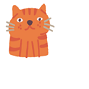

AI CAMPING GUIDE
내 취향에 맞는
캠핑을 찾아보세요
지역과 분위기, 필요한 장비를 알려주면 캠스터가 함께 골라드려요.
챗봇과 추천 시작하기
→

CAMPSTER FEATURES
캠스터가 도와드려요
⌖
지역으로 찾기
원하는 지역과 이동 범위로 캠핑장을 찾아요.
✦
취향으로 찾기
바다, 별, 반려동물 등 취향을 반영해요.
◇
장비 알아보기
처음 준비할 장비의 선택 기준을 알려드려요.